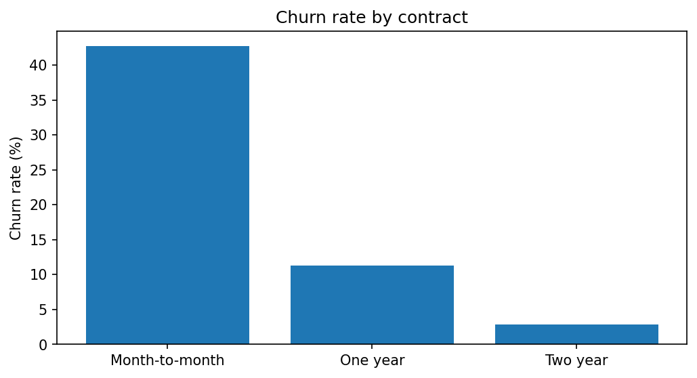
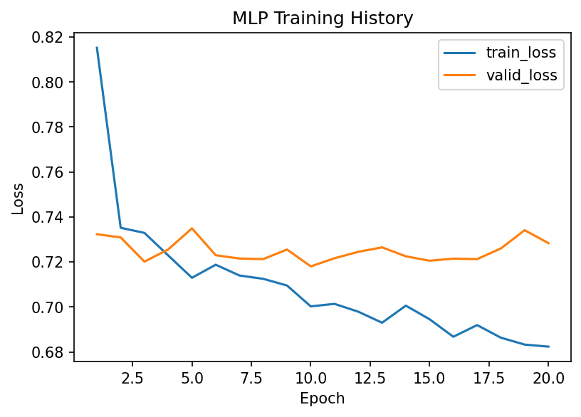

Uma operadora de telecom precisa identificar clientes com maior risco de cancelamento para priorizar ações de retenção.
O dataset escolhido foi o Telco Customer Churn, com 7.043 registros e 21 colunas na base bruta. A variável alvo é Churn.
Tech Challenge - Fase 01
Um projeto completo para identificar clientes com risco de cancelamento e apoiar ações de retenção em telecom.
Contexto
Uma operadora de telecom precisa identificar clientes com maior risco de cancelamento para priorizar ações de retenção.
O dataset escolhido foi o Telco Customer Churn, com 7.043 registros e 21 colunas na base bruta. A variável alvo é Churn.
Objetivo
O que foi feito
Na análise inicial, eu olhei os tipos das colunas, valores ausentes, duplicados, distribuição do churn e variáveis importantes.
Foram tratados TotalCharges, que vinha como texto, e customerID, removido da modelagem por ser apenas identificador.

O que foi feito
Antes da rede neural, eu treinei modelos de comparação: DummyClassifier, LogisticRegression e RandomForestClassifier.
O tratamento dos dados usa preenchimento de valores, padronização de variáveis numéricas, codificação das categóricas, seed fixa e validação estratificada.
O que foi feito

Resultado
| Modelo | PR-AUC | ROC-AUC | Recall | Melhor custo |
|---|---|---|---|---|
| MLP PyTorch | 0.6348 | 0.8429 | 0.9091 | 13.780 |
| Logistic Regression | 0.6334 | 0.8419 | 0.7059 | 14.380 |
| Random Forest | 0.6055 | 0.8171 | 0.6578 | 17.060 |
O que foi feito
Fechamento
O projeto entrega um fluxo completo: análise dos dados, modelos de comparação, rede neural em PyTorch, registro de experimentos, API, testes automatizados e documentação.
A escolha da MLP foi baseada não só em métrica técnica, mas também no menor custo esperado para o problema de churn.
Depois dos slides